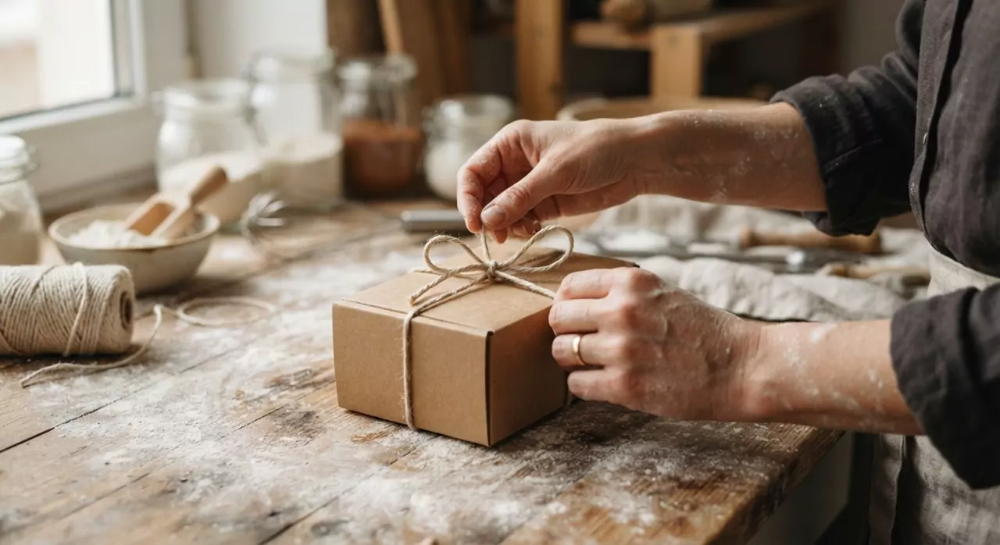

Confiture, sablés, thé noir. On ferme la boîte, on noue la ficelle.
Je m’appelle Charlotte Bon Goût. Je remplis chaque coffret moi-même, pot par pot, avec les produits de six producteurs que je connais par leur prénom.
Voir les 5 coffrets

Une seule personne derrière chaque boîte
Avant d’en faire mon métier, je préparais déjà ces paniers pour mes proches : un tour au marché le samedi, trois ou quatre arrêts chez les producteurs du coin, et une boîte à offrir le soir même.
Aujourd’hui c’est la même chose, en un peu plus grand. Je goûte tout avant de le mettre dans un coffret. Si je ne le rachèterais pas pour ma propre cuisine, il n’y entre pas.
Vous voulez savoir qui fait vos confitures ? Leurs noms, leurs horaires et leurs produits sont sur la page Producteurs partenaires.
L’ardoise
Cinq coffrets, cinq moments de la journée ou de l’année. Cliquez sur un nom pour voir tout ce qu’il y a dedans.
Commander un coffret- Petit Déjeuner29 € confiture d’abricot, granola bio, thé noir, sablés
- Déjeuner39 € lentilles mijotées, tartinade de poivrons, huile de noix, vinaigre de cidre
- Goûter24 € pâte à tartiner, sablés au beurre salé, confiture de fraise
- Anniversaire45 € six produits, un ruban rouge et une carte écrite à la main
- Surprise34 € six produits de saison, je choisis, vous ouvrez
- Préparation
- Sous 3 jours ouvrés, à la main.
- Livraison
- Colissimo, 6,90 €. Offerte dès 60 €.
- La carte
- Votre message, recopié à la main. Offert.
- Emballage
- Carton kraft, frisure de papier, ficelle en coton. Zéro plastique.